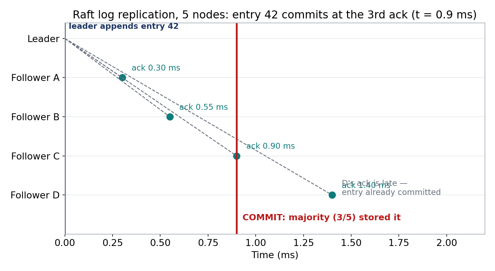
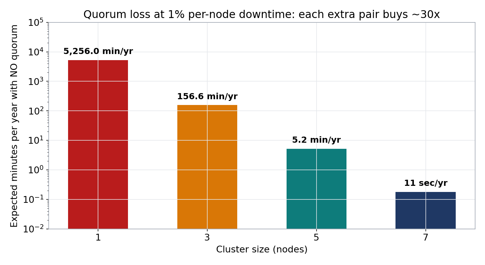
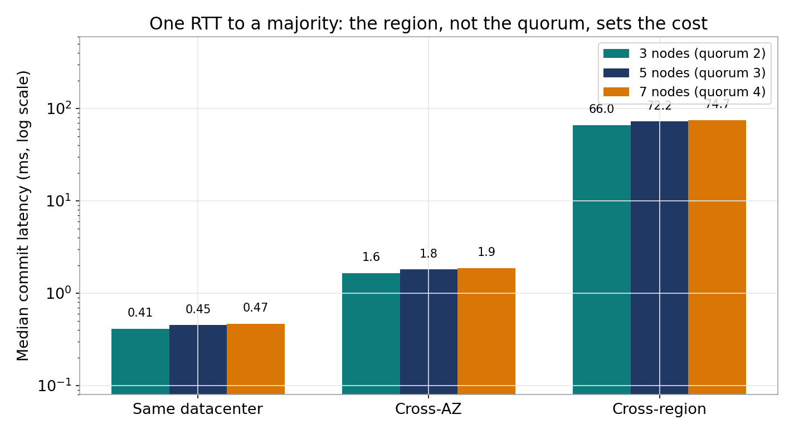
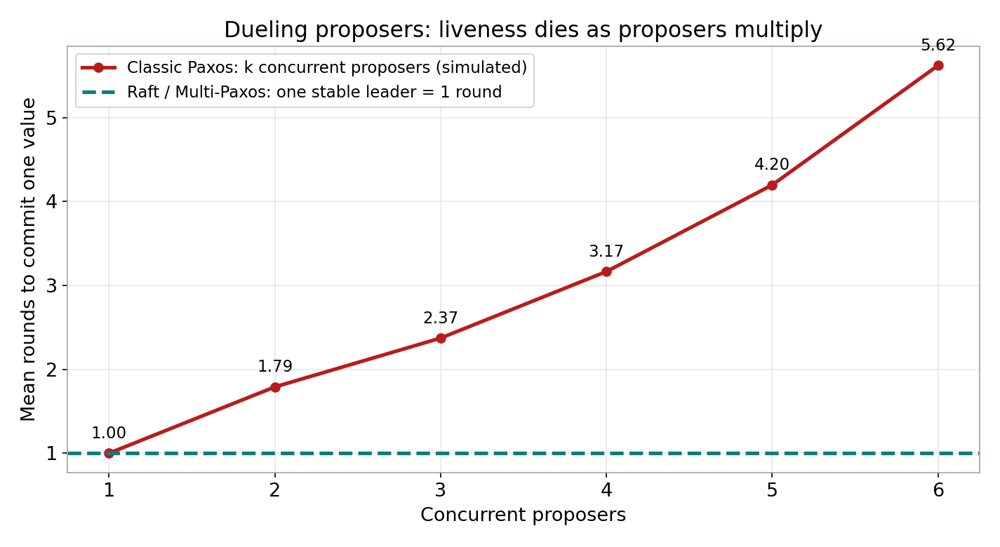

Part 1 gave the cluster a leader. This part answers the harder question: once the leader exists, how do five machines that crash, lag, and get partitioned agree on one version of the truth — and never change their minds about it afterward?
That question is consensus, and it is the load-bearing wall of distributed systems. Leader election picks who talks; consensus decides what was said. Every strongly consistent database you have used — etcd behind Kubernetes, CockroachDB, TiKV, Spanner — is a consensus protocol with a storage engine bolted on. Get consensus wrong and you get two leaders writing two different balances to the same account. Get it right and a cluster of flaky machines behaves like one machine that never crashes, never lies, and never forgets.
The benchmark hook for this part is the quorum-loss arithmetic: how often a cluster of a given size loses the ability to agree at all. At 1% per-node downtime, a 3-node cluster is quorum-less 157 minutes a year. A 5-node cluster: 5.2 minutes. A 7-node cluster: 11 seconds. Each extra pair of nodes buys roughly 30× — and the price is one more round trip on every write.
The ELI5 version
Five friends share one notebook where they record who owes whom money. The rule: a new line only counts once at least three of the five have copied it into their own notebooks. Three is the magic number again — any two groups of three share at least one person, so two contradictory lines can never both get three copies. That overlap is the whole safety argument, and it has a name: a quorum.
Now the twist that makes it interesting. The friends don't write at the same time, they shout across a noisy room, and sometimes one of them falls asleep mid-sentence. So they add a referee: one friend is the leader, and only the leader is allowed to propose new lines. The others just copy what the leader says and shout back "copied it." A line is committed — permanent, never to be erased — the moment three notebooks hold it. If the leader falls asleep, Part 1's election picks a new one, and the new leader first asks everyone what they already copied, so nothing committed is ever lost.
That is Raft in one paragraph. Paxos is the same game with no permanent referee: anyone may propose a line at any time, but each proposal carries a number, and a higher number beats a lower one. It works — it was proven correct in 1989 — but when two friends propose at once, they keep outbidding each other and nothing gets written. Raft's insight was that a stable leader turns a two-round negotiation into a one-round copy job, and that understandability is a feature, not a luxury.
How it works: two phases, one log, a majority
Both protocols solve the same problem — a replicated state machine: every node applies the same commands in the same order, so every node ends up in the same state. The log is the system. Consensus is just agreeing on what goes into the log, and in what order.
Paxos (Lamport, 1989; published 1998), single-decree version, has three roles — proposers, acceptors, learners — and two phases per value:
- Prepare (Phase 1). A proposer picks a ballot number n and asks a majority: "promise me you won't accept anything numbered below n, and tell me the highest-numbered value you've already accepted." If a majority promises, the proposer is bound: if any acceptor already accepted a value, the proposer must re-propose that value, not its own.
- Accept (Phase 2). The proposer sends "accept value v at ballot n" to a majority. Once a majority accepts, v is decided — forever. Any later proposer with a higher ballot reaches at least one of those acceptors in its prepare phase (majorities intersect) and is forced to re-propose v.
That forced re-proposal is the entire safety proof. A value, once decided by a majority, can never be un-decided, because every future majority overlaps the deciding one and inherits its choice.
Multi-Paxos is the production version: elect a stable leader once, and the leader skips Phase 1 for every subsequent log slot — steady state is one round trip per command. Raft (Ongaro & Ousterhout, 2014) starts from that observation and rebuilds the protocol around it, decomposing consensus into three subproblems a human can hold in their head: leader election (Part 1), log replication, and safety.
Raft's log replication, step by step:
- The client writes to the leader. The leader appends the entry to its own log, uncommitted.
- The leader replicates. It sends
AppendEntriesRPCs to every follower, each carrying the entry plus the index and term of the previous entry — the consistency check that keeps logs aligned. - Followers store and ack. A follower accepts only if its log matches at the previous index and term; if it doesn't, the leader steps back one entry at a time until the logs line up, then overwrites the divergent tail. Raft logs never have holes.
- Commit at a majority. Once a majority has stored the entry, the leader advances its commit index and applies the entry to the state machine. The next heartbeat tells followers to commit it too.
In our toy timeline, a 5-node cluster commits entry 42 at the third ack — 0.9 ms after the leader appended it. The fourth follower's ack is late and irrelevant: the entry was already committed.

The availability arithmetic is the payoff, and it is exact binomial math, not a vibe. Assume each node is independently down 1% of the time. A single node is unavailable 5,256 minutes a year. A 3-node cluster loses quorum only when 2+ nodes are down — 157 minutes a year. Five nodes: 5.2 minutes. Seven nodes: 11 seconds. Each extra pair buys ~30×:

The same math at 5% per-node downtime is less forgiving — 3 nodes lose quorum 3,811 minutes a year (2.6 days), 5 nodes 609 minutes, 7 nodes 102 minutes — which is why nobody runs a 3-node etcd on flaky hardware and calls it highly available. And the catch from Part 1 still applies: this counts electability, not health. A 3-node cluster tolerates one failure, 5 nodes two, 7 nodes three. Even sizes buy nothing — a 4-node cluster tolerates 1 failure, the same as 3, while paying for an extra replica on every write.
The cost of agreement is one round trip to a majority — and the region, not the quorum, sets the price. A commit waits for the (quorum−1)th fastest follower, so in the same datacenter (0.5 ms median RTT) a 3-node cluster commits in ~0.41 ms and a 7-node cluster in ~0.47 ms: the bigger quorum costs almost nothing. Cross-region (80 ms median RTT) the same commits cost ~66 ms and ~75 ms. The quorum size is a rounding error; the geography is the bill:

Paxos vs Raft: same guarantees, different failure mode
On paper they are equivalent: same quorum, same 1-RTT steady state with a stable leader, same safety under any partition. The difference is what happens when the leader is not stable.
Classic Paxos has a liveness problem: dueling proposers. Two proposers with rising ballot numbers can pre-empt each other forever — A prepares at ballot 5, B prepares at 6 and blocks A, A retries at 7 and blocks B — and no value is ever decided. The FLP impossibility result (Fischer, Lynch, Paterson, 1985) says this is fundamental: no deterministic protocol can guarantee both safety and liveness in a fully asynchronous network with even one crash. Every real protocol guarantees safety always and liveness only when the network eventually behaves — partial synchrony — and Paxos needs a stable leader (or randomized backoff) to get there. We simulated the duel: with a round lasting a quarter of the contention window, one proposer commits in 1.00 round; two take 1.79; three take 2.37; six take 5.62 rounds of wasted work:

Raft removes the duel by construction: there is exactly one leader per term, elected by majority vote, and only the leader proposes. A candidate that loses an election waits out a randomized timeout instead of immediately re-proposing at a higher ballot. The cost is a restriction Paxos doesn't have — Raft's log-matching property forces logs to be strict prefixes, so a new leader can never have holes in its log, and a follower with a divergent tail gets overwritten rather than reconciled slot by slot. In practice that restriction is what makes Raft implementable: etcd's Raft library, Consul, CockroachDB, TiKV, and Kafka's KRaft all run it, while plain Paxos survives mostly in its Multi-Paxos form inside Spanner and Chubby.
| Paxos / Multi-Paxos | Raft | |
|---|---|---|
| Steady-state commit | 1 RTT (stable leader) | 1 RTT |
| First write / leader change | 2 RTTs (prepare + accept) | 1 RTT after election |
| Quorum | ⌊N/2⌋+1 | ⌊N/2⌋+1 |
| Log structure | Per-slot agreement, holes possible | Strict prefix, no holes |
| Leader election | Implicit (highest ballot wins) | Explicit terms + RequestVote |
| Failure mode | Dueling proposers stall liveness | Split votes stall one term, then retry |
| Production | Spanner, Chubby, Megastore | etcd, Consul, CockroachDB, TiKV, KRaft |
The state of the art: you almost never implement consensus yourself
The modern rule is the same as Part 1's: use a consensus store, don't write one. etcd (Raft) is the coordination plane of every Kubernetes cluster on Earth. ZooKeeper runs ZAB, a Multi-Paxos cousin. Spanner runs Paxos per shard with TrueTime clocks to shrink the uncertainty window. CockroachDB runs Raft per range — thousands of tiny consensus groups, each with its own leader — so a single slow disk stalls one range, not the database. TiKV does the same per region.
Three refinements from the last decade do the heavy lifting inside those systems:
- Joint consensus for membership change. Adding or removing a node is itself a consensus decision, and doing it wrong creates two majorities. Raft's joint consensus runs the old and new configuration simultaneously — an entry commits only when a majority of both configs store it — so there is never a moment when two different quorums can both commit. etcd also supports the simpler one-server-at-a-time change for the common case.
- PreVote: stopping the disruptive rejoin. A partitioned node that rejoins with a stale term used to force an election it could never win, disrupting a healthy leader. PreVote (now default in etcd) makes the candidate first ask "would anyone vote for me?" — if the answer is no, it never increments its term. One check, and a whole class of availability incidents disappears.
- ReadIndex / leader leases for linearizable reads. A read that skips consensus can return stale data from a deposed leader. etcd defaults to ReadIndex: confirm leadership with one heartbeat round, then serve the read from the leader's state. Cheaper than a write, still linearizable.
The research frontier in 2026 is still Raft, refined — the same January 2026 assessment (arXiv:2601.00273) that catalogued Raft's attack surface in Part 1 also frames the open problem: Raft assumes crashes, not adversaries, and Byzantine-tolerant variants (3f+1 nodes instead of 2f+1) are the price of surviving a lying node. Cross-domain Raft (CD-Raft, arXiv:2603.10555) reports 32.9% lower average latency and 49.2% lower tail latency across administrative domains. And the leaderless branch — EPaxos, and its successors — removes the leader entirely for workloads where one hot leader is the bottleneck, at the cost of complexity few teams want to own. Raft won the last decade by being the protocol engineers can hold in their heads; the challengers win only where the leader itself is the problem.
Why it breaks
The minority partition that keeps writing is the failure consensus exists to prevent — and it still happens when consensus is bypassed. A 2-node side of a 5-node cluster can never reach quorum 3, so it cannot commit anything: that is the guarantee, and our notebook asserts it. But the guarantee only holds inside the protocol. GitHub's October 2018 outage was a failover automation promoting a MySQL replica without a quorum while the old primary still accepted writes — two primaries, both writing, hours of reconciliation. The lesson from Part 1 stands, one level up: an agreement that doesn't require a majority isn't an agreement, it's a coin flip with extra steps.
The stale leader is the quieter version. A partitioned leader doesn't know it lost. It keeps appending to its log, and when the partition heals, its uncommitted entries get overwritten by the new leader's log — which is correct, because they were never committed, but it is silent data loss for any client that was told its write succeeded before the commit actually happened. The fix is never to acknowledge a write before a majority stores it, and to fence stale leaders with term numbers (Part 1). etcd's revisions and ZooKeeper's zxid are fencing tokens wearing different clothes.
The slow disk is the version nobody designs for. Consensus assumes crashes are clean: a node is either up or down. A disk that takes 30 seconds to fsync is neither — the node is alive, voting, and dragging every commit to its own speed, because a commit waits for the slowest member of the fastest quorum. In production the signal is commit latency p99 climbing while the leader looks healthy, and the fix is boring: separate the Raft write-ahead log onto its own fast disk, alert on etcd_disk_wal_fsync_duration_seconds, and treat a slow follower as a failed follower — remove it from the cluster before it becomes the quorum's pace car.
Takeaways
- Consensus is agreement on one ordered log, enforced by majority quorum: any two majorities overlap, so a decided value can never be un-decided.
- Paxos (1989) proved it could be done; Raft (2014) made it implementable by giving the cluster one stable leader and a strict log.
- The availability arithmetic: at 1% per-node downtime, 3 nodes lose quorum 157 min/yr, 5 nodes 5.2 min, 7 nodes 11 sec — each extra pair buys ~30×.
- Commit costs one RTT to a majority: ~0.4 ms same-datacenter, ~66 ms cross-region. Geography, not quorum size, is the bill.
- Classic Paxos stalls when proposers duel (6 proposers: 5.62 rounds per commit in simulation); a stable leader commits in 1 round, always.
- Don't implement consensus. Use etcd, Consul, or a database that already did — and keep its write-ahead log on a fast disk.
Next in Season 2: Part 3 — Distributed transactions & 2PC: what happens when one write has to land in two places at once. Follow on dev.to for the next part.